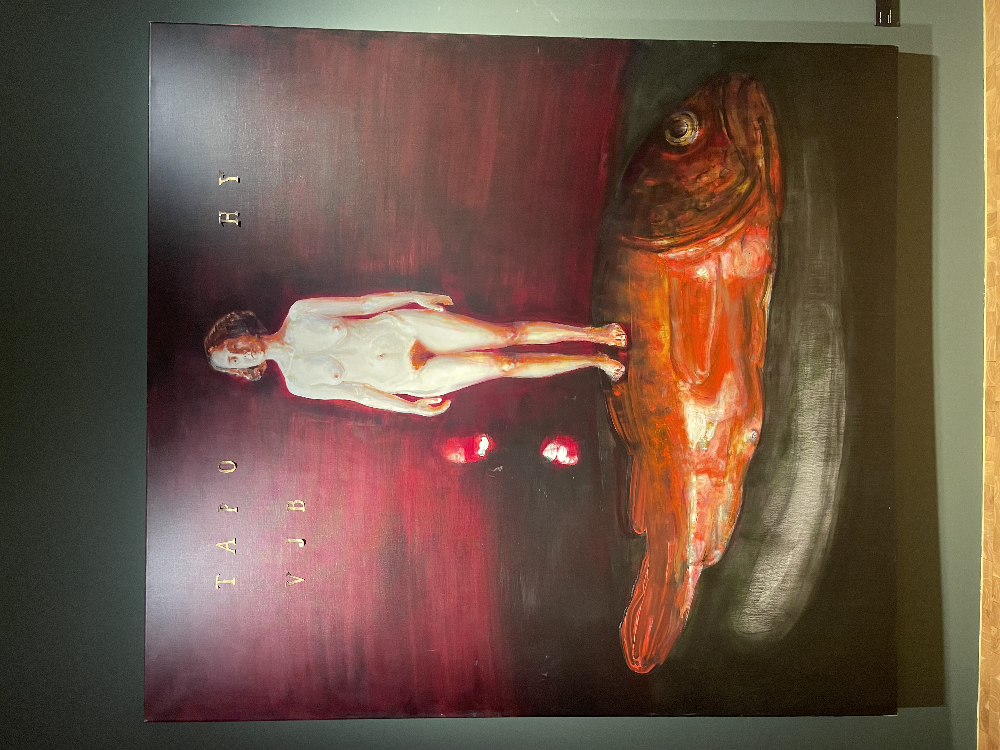
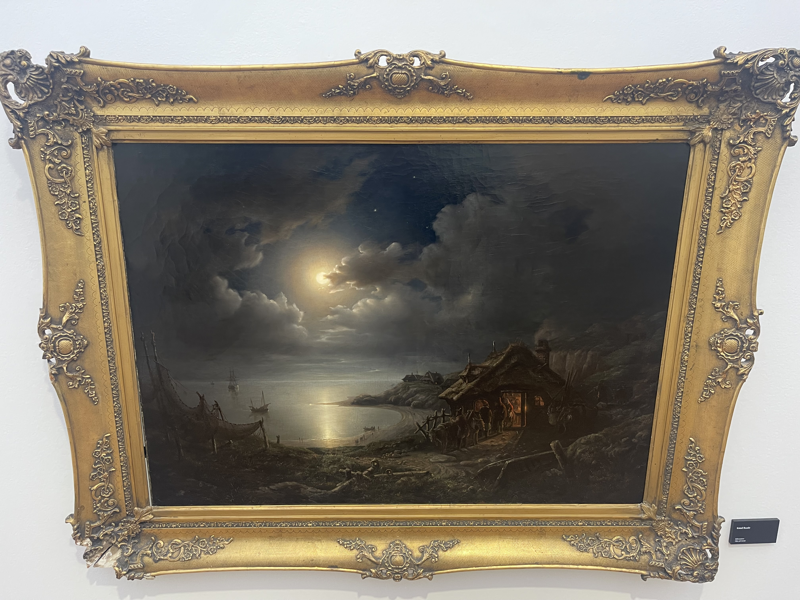

Velkommen til Khåk Galleri! Vi er et kunstgalleri som viser frem både
klassiske og moderne kunstverker.
Vårt mål er å fremme og støtte norske kunstnere og gi besøkende en
unik opplevelse med kvalitetsinnhold. KHÅK Kunsthall – uttales «kåk» –
en muntlig betegnelse på en bolig.
Navnet er en sammensetning av initialene til kunstsamleren Kjell Holm
og Ålesund Kunstforening. I vår kåk formidler vi samtidskunst og
grafikk – og løfter frem kunstarven etter Kjell Holm. Velkommen inn –
her er kunsten for alle!

Vi formidler original grafikk fra et bredt spekter av norske
kunstnere. Hos oss finner du et mangfold av uttrykk – fra klassiske
teknikker som litografi og tresnitt til moderne silketrykk og digitale
grafiske verk.
Alle arbeidene er signert og i begrensede opplag, slik at du får ekte
kunst med varig verdi. Vi tilbyr gratis frakt på grafikk i hele Norge,
trygg pakking og personlig oppfølging. Utforsk vårt utvalg av
samtidskunst og kjøp grafikk på nett – enkelt, sikkert og
inspirerende.
I tillegg til grafikk formidler vi keramikkunst, arbeider i tre,
skulpturer og malerier på både lerret og papir i vår butikk. For disse
verkene, samt innrammede arbeider, avtales frakt individuelt.
